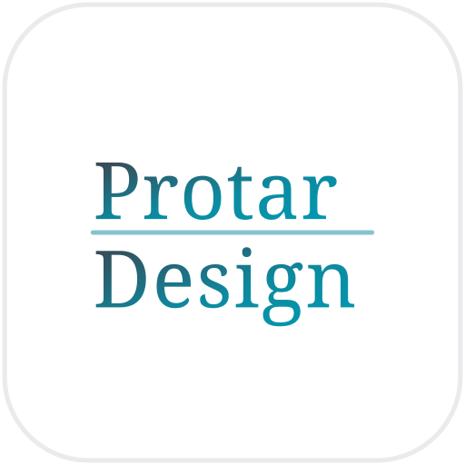
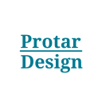

Sizes
各サイズ実寸（標準版）
160 / 64 / 48 / 32 / 16px。標準版は白地グラデ文字のため、32px 以下になると文字が薄く・細く感じられます（特に明るい側の色が白地に溶けます）。小サイズは次節の堅牢版を推奨。
160px
64px
48px
32px
16px
Small-size robustness
標準版 vs 小サイズ堅牢版
32px・16px での見え方を並列比較。32px 以下では右の堅牢版（logo-icon-small.svg）を使ってください。
標準版（白地グラデ文字）
32px
16px
小さくなるほど文字が薄く・細る。大きめ表示向き。
32px 以下はこちら
堅牢版（濃ティール単色・太字）

32px16px
単色 #007a91・weight 600・字間0・太め罫線で判読性を確保。
On dark
ダーク背景での見え方
白地の角丸スクエアなので、ダーク背景でもカード状に自然に成立します。境界がぼやける場合は微細な白枠（1px）を足すと締まります（右）。
標準 / 枠なし
標準 / 微白枠
堅牢 64px
白地ロゴはダーク面の上でも明るいタイル状に立ち、視認性は良好。
Profile crop
円形クロップでの挙動
SNSプロフィール（X・Instagram・LINE等）はアイコンを円形にクロップします。角丸スクエアの四隅が円で削られるため、左の通り角の白地が落ちます。文字はほぼ中央寄せのため欠けませんが、罫線端や文字の端ギリギリは余白に注意してください。
円クロップ（SNS実挙動）
角丸スクエア（原形）
堅牢版 / 円クロップ
Usage notes
使いどころメモ
- 標準版（logo-icon.svg）：48px 以上、Webヘッダー・名刺・資料・OGP など。白地グラデの上品さが活きるサイズで。
- 堅牢版（logo-icon-small.svg）：32px 以下は必ずこちら。ファビコン・アプリアイコン小・リスト内アイコン等。
- SNSプロフィール：円形クロップ前提。角丸スクエアの四隅は円で落ちる。文字は中央寄りで欠けにくいが、端の余白を確保。
- ダーク背景：白地カードとして自然に成立。境界をはっきりさせたい時のみ 1px の微白枠を追加。
- フォント：SVGはテキストを保持（パス化していない）。確実な字形固定が必要な配布物では Fraunces をアウトライン化すること。未読込時は serif フォールバック。
- 綴り：会社名 ProtarDesign、ロゴ内は2段で Protar / Design。表記ゆれ厳禁。